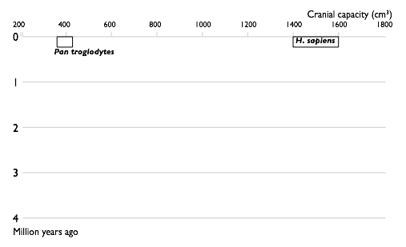
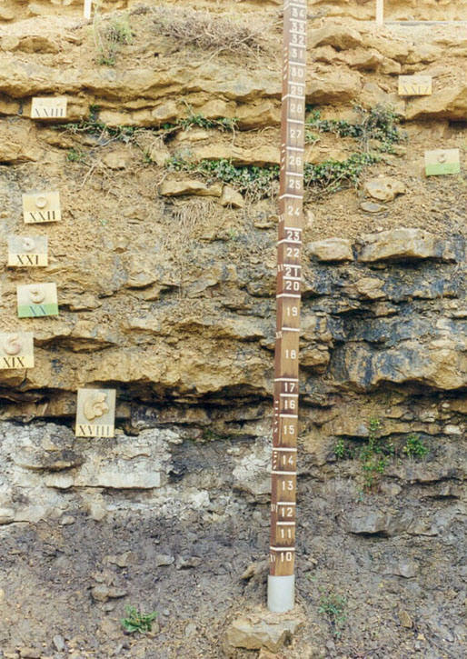
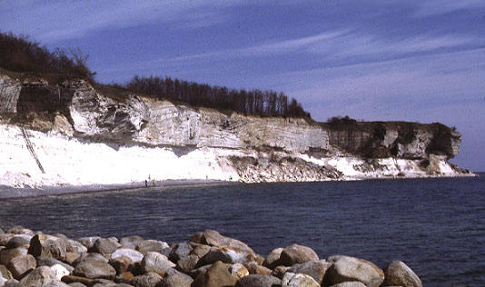
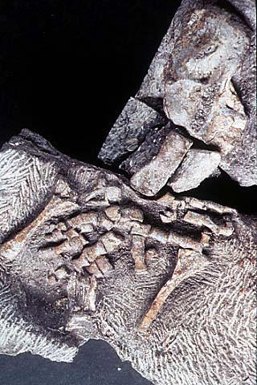

3. Палеонтологические доказательства
Содержание раздела:
- Ископаемая летопись
- Биостратиграфия
- Переходные формы
- Превращение динозавров в птиц
- Другие переходные формы между крупными таксонами
- Эволюция человека
- Эволюция лошади
- "Микро" и "макро"
Ископаемая летопись
Как правило, останки растений и животных разлагаются и исчезают без следа. Но иногда биологические ткани замещаются минеральными веществами, и образуются окаменелости. О том, как и при каких обстоятельствах это происходит, и почему иногда в древних остатках живых организмов могут сохраняться даже отдельные органические молекулы и тонкие структуры, такие как клетки или кровеносные сосуды, подробно рассказано в статье одного из авторов данной публикации, палеонтолога А.Ю.Журавлева "Вечно неживые".
Обычно учёные получают в распоряжение окаменевшие кости или раковины, то есть твёрдые части, скелеты. Иногда находят отпечатки следов животных или следы их жизнедеятельности. Еще реже находят животное целиком — вмороженным в лёд в районах современной вечной мерзлоты, попавшим в смолу древних растений (янтарь) или в другую естественную смолу — асфальт (см.: изображения окаменелостей).
| 1850 |  |
| 1950 |  |
| 2002 |  |
| Прогресс в изучении эволюции человека. Увеличение числа известных науке видов гоминин по времени. Каждый вид изображен в виде прямоугольника, показывающего границы, в которых варьировал объём черепа, и место вида в палеонтологической летописи. Видно постепенное заполнение промежутков между видами. | |
Изучением ископаемых останков занимается палеонтология. Как правило, осадочные породы залегают слоями, поэтому более глубокие слои рассказывают более старые истории (принцип суперпозиции). Этот принцип лег в основу стратиграфии - "науки о земных слоях". Данные стратиграфии позволяют определять относительный возраст окаменелостей, то есть выяснять, какие ископаемые организмы жили раньше, а какие позже. Любопытно, что автор принципа суперпозиции, датский ученый XVII века Николай Стенон (Нильс Стенсен) за свои заслуги перед церковью был в 1987 году беатифицирован (причислен к лику блаженных) римским папой Иоанном Павлом II. Возможно, это единственный случай, когда католический блаженный внес столь важный вклад в развитие эволюционизма.
Принцип суперпозиции Стенона и основанная на нем наука стратиграфия позволяют, сравнивая ископаемые формы из последовательных напластований, делать выводы об основных направлениях эволюции. Для оценки возраста окаменелостей используются многочисленные методы датировки, которые подразделяются на относительные (стратиграфические) и абсолютные (разнообразные радиометрические методы, а также люминисцентные, методы электронно-парамагнитного резонанса и др.) (см. А.Марков. Хронология далекого прошлого). Надежность современных методов датировки земных слоев и содержащихся в них ископаемых доказывается, в частности, тем обстоятельством, что оценки возраста, полученные при помощи множества независимых методов, как правило, получаются сходными. Все эти методы быстро развиваются. Еще лет 20-30 назад довольно часто наблюдались значительные расхождения результатов, полученных разными методами. На этих расхождениях до сих пор любят спекулировать противники эволюции, но их сведения сильно устарели. По мере совершенствования используемых методов они становятся все более точными и дают все более сходные результаты. Поэтому, например, международная геохронологическая шкала образца 1980-х годов довольно заметно отличается по абсолютным датировкам от шкалы образца 2000-х годов (различия в некоторых датах, например, в дате начала кембрийского периода, могут достигать 5-7%), однако за последние 10 лет изменения такого рода практически перестали происходить. На сегодняшний день абсолютный возраст древних отложений во многих случаях удается определить с точностью до долей процента. О достоверности радиометрических методов и несостоятельности попыток антиэволюционистов их "опровергнуть" см.: Николай Борисов. Проставляем даты на геологической летописи, или Как физики геологам помогают; А.Марков. Хронология далекого прошлого.
При взгляде на палеонтологическую летопись бросается в глаза тот факт, что жизнь на Земле существенно менялась, вплоть до полной неузнаваемости. Чем глубже в прошлое мы смотрим, тем меньше видим общего с современной биосферой. Первые прокариоты (простейшие одноклеточные, не обладающие оформленным клеточным ядром) появляются приблизительно 3.5 млрд лет назад. Первые одноклеточные эукариоты появляются 1.75 млрд лет назад (подробнее см.: Происхождение эукариот). Еще через миллиард лет, немногим более 635 млн лет назад, в палеонтологической летописи появляются первые бесспорные многоклеточные животные - губки (см.: Животные появились свыше 635 миллионов лет назад). Через несколько десятков млн лет мы находим первых червей и моллюсков, а еще через 15 млн лет — первых примитивных позвоночных, похожих на современных миног. Челюстноротые рыбы появляются 410 млн лет назад, насекомые — 400 млн лет назад, и еще 100 млн лет суша покрыта в основном папоротниками и населена насекомыми и земноводными. С 230 по 65 млн лет назад на Земле господствуют динозавры, самые распространенные растения — саговники и другие группы голосеменных. Первые цветковые растения появляются чуть более 100 млн лет назад. В целом чем ближе к современности, тем больше сходства имеют ископаемые флоры и фауны с современными. Наблюдаемая картина соответствует эволюционной теории и не имеет других научных объяснений.
"ГЕОЛОГИЯ ПОТОПА". Антиэволюционисты, как правило, отрицают геохронологическую шкалу и утверждают, что практически все осадочные породы сформировались единовременно во время Всемирного Потопа. При этом погибшие организмы отсортировались таким образом, что в нижних слоях осадков оказались самые маленькие и простые организмы, в верхних - крупные и сложные. "Геология потопа" имеет целый ряд проверяемых следствий, ни одно из которых не подтверждается фактами. Вот несколько примеров таких неподтвержденных следствий: 1) Слои осадочных пород должны располагаться всегда горизонтально (антиэволюционисты обычно отрицают тектонику и складчатость, из-за которых слои часто залегают не горизонтально); 2) На дне океанов должны быть широко представлены самые нижние (докембрийские, палеозойские) осадочные слои (их там нет совсем, потому что дно океанов постоянно обновляется в результате тектонических процессов); 3) Должно быть много районов, которые в течение всего Потопа находились под водой, и где поэтому должна была образоваться полная стратиграфическая колонна - все слои от архея до голоцена (таких полных геологических разрезов не существует, потому что ни в одной точке Земли не поддерживались благоприятные для осадконакопления условия непрерывно в течение всей земной истории); 4) Не должно быть на большой высоте над уровнем моря стационарных комплексов окаменелостей, таких как ископаемые коралловые рифы; не должно быть высоких гор, сложенных в основном осадочными породами; 5) Гидродинамическая "сортировка" ископаемых во время Потопа могла быть только статистической, но не абсолютной. Иными словами, мы должны были бы находить мало костей млекопитающих в докембрийских отложениях, но мы не находим их совсем, а этого "Геология потопа" объяснить не может. Одна-единственная достоверная находка ископаемого кролика в докембрии опрокинула бы современную эволюционную теорию, и научный прогноз состоит в том, что такая находка никогда не будет сделана.
"ЭКОЛОГИЧЕСКАЯ СОРТИРОВКА". Еще один хитроумный зигзаг антиэволюционной мысли породил "теорию", согласно которой "сортировка" ископаемых во время Потопа объясняется тем, что разные животные с разной эффективностью "спасались" от бедствия: низшие формы погибли первыми, тогда как высшие продержались дольше - например, потому, что были способны убежать в горы. Что касается растений, не способных куда-либо убежать, то их закономерное распределение в земных слоях противники эволюции объясняют, видимо, тем, что низшие растения росли ниже, а высшие - выше над уровнем моря (картина, имеющая мало общего с реальностью). Эта "теория" еще смехотворнее и беспомощнее, чем "модель гидродинамической сортировки". Она рассчитана исключительно на людей, абсолютно не знакомых с реальными данными стратиграфии и палеонтологии. Например, как объяснить с точки зрения этой теории, что и пыльца и споры наземных растений в осадочных породах тоже распределяются в соответствии с общим правилом? В докембрийских и кембрийских отложениях вообще нет пыльцы и спор наземных растений. Первые споры наземных мохообразных появляются в отложениях середины ордовикского периода (около 465 млн лет назад). Споры первых сосудистых растений известны с конца ордовика (450-444 млн лет назад) (см.: Палеонтологи уточнили время и место появления сосудистых растений). И так далее, вплоть до появления пыльцы цветковых растений (и самих окаменевших цветковых растений) в меловом периоде (немногим более 100 млн лет назад). Прекрасно известно, что пыльца и споры наземных растений далеко разносятся ветром, тонут в морях и поэтому повсеместно присутствуют в морских отложениях, образующихся в наши дни. Так же обстояло дело и в прошлом. Поэтому "споро-пыльцевой" анализ - один из надежнейших методов биостратиграфии, позволяющий с большой точностью определять возраст любых осадочных отложений, как морских, так и континентальных. "Теория экологической сортировки" не в состоянии объяснить стратиграфическое распространение пыльцы и спор. То же самое со всей очевидностью относится к таким категориям ископаемых, как: 1) окаменевшие следы (ихнофоссилии), оставленные древними организмами на морском дне и на мягкой почве континентов, 2) морской планктон (радиолярии, фораминиферы, кокколитофориды и т.д.) - какая у них-то могла быть экологическая сортировка?, 3) древние озерные отложения; хороший пример - отложения юрского озера Каратау, где есть разнообразные остатки юрских позвоночных (в т.ч. мелких птерозавров), насекомых, растений, но нет ни морских организмов, ни окаменелостей, принадлежащих животным и растениям других эпох. Причем тут всемирный Потоп? Объяснить всю совокупность палеонтолого-биостратиграфических данных всемирным Потопом абсолютно немыслимо, если иметь об этих данных сколько-нибудь полное представление.
КАТАСТРОФИЗМ. На ранних этапах развития исторической геологии и палеонтологии, когда было выделено еще очень небольшое число геохронологических интервалов, наблюдаемую картину пытались объяснить при помощи теории катастроф (Бог несколько раз уничтожал свое Творение глобальными катастрофами, а потом творил заново). Но сегодня глобальные (узнаваемые по всему миру) геохронологические интервалы, каждый со своим уникальным комплексом окаменелостей, уже исчисляются сотнями, а преобразования животного и растительного мира в последовательностях слоев явно выглядят во многих случаях вполне постепенными. Даже самые ярые антиэволюционисты не могут вообразить, зачем могло понадобиться Богу сотни раз уничтожать жизнь, а потом каждый раз воссоздавать ее лишь в слегка измененном виде. Развитие исторической геологии и палеонтологии, таким образом, опровергло катастрофизм. Тем не менее в истории Земли действительно были периоды массовых вымираний, сыгравшие значительную роль в эволюции биосферы (см.: Экологические кризисы, их причины и эволюционная роль).
Биостратиграфия
Как и во многих других случаях, для того, чтобы получить верное представление о степени убедительности палеонтологических доказательств эволюции, необходимо прежде всего осознать масштаб происходящего, всю громадность объема накопленных данных. Для начала рассмотрим современную геохронологическую шкалу - результат многолетних трудов многотысячной международной армии геологов (См. также: Стратиграфия и геохронология).
На этой шкале выделено 115 временных (геохронологических) интервалов. Это "международные" интервалы, то есть такие, которые удается опознать по всему миру. В каждом регионе существуют еще и местные (региональные) стратиграфические шкалы, которые, как правило, намного более детальны. Однако многие региональные слои не удается точно соотнести ("скоррелировать", как говорят геологи) со слоями, известными в других регионах. Поэтому общее количество выделяемых слоев на международной шкале значительно меньше, чем на региональных шкалах. Почему же не все региональные слои удается скоррелировать? Дело в том, что корреляция слоев в большинстве случаев осуществляется по комплексам окаменелостей. А в разных регионах во все времена, как и сегодня, жили разные организмы. Для межрегиональной корреляции удобнее всего использовать такие ископаемые организмы, которые: 1) были распространены всесветно (такие организмы называют "космополитами"), 2) были достаточно многочисленными и неплохо сохраняющимися в ископаемом состоянии (для этого весьма желательно наличие скелета), 3) существовали недолго (иначе они будут встречаться во многих слоях, и их нельзя будет использовать для идентификации конкретного слоя). Ископаемые организмы, удовлетворяющие этим условиям, называют "руководящими ископаемыми", и они играют ключевую роль в стратиграфии. Как правило, роль руководящих форм играют группы организмов, для которых была характерна наиболее быстрая эволюция, быстрая смена видового состава. Как видим, стратиграфия - это наука, в которой геология теснейшим образом переплелась с эволюционным учением. Очень хорошими руководящими ископаемыми являются споры и пыльца растений, а также разнообразные мелкие планктонные организмы (например, фораминиферы, радиолярии, диатомовые водоросли, кокколитофориды), а во многих случаях и более крупные животные (трилобиты, аммониты, конодонты, археоциаты, двустворчатые и брюхоногие моллюски, брахиоподы и мн. др.). Каждый интервал геохронологической шкалы, кроме докембрийских (показаны на рисунке справа), характеризуется уникальным комплексом руководящих ископаемых, а также гораздо более обширным комплексом всех прочих ископаемых, по которым коррелировать слои тоже можно, но не так удобно. В докембрии ископаемых мало, и поэтому там стратиграфия базируется в основном на радиометрическом датировании (определении абсолютного возраста) горных пород. В настоящее время уже установилось практически полное согласие между палеонтологическими (основанными на эволюции организмов) и физическими (радиометрическими) методами геологической корреляции. Таким образом, налицо союз трех наук: геологии, эволюционной биологии и физики. Все вместе они дают стройную и непротиворечивую картину постепенного развития жизни на нашей планете.
Креационисты иногда заявляют, что они отрицают из всех наук только одну-единственную - эволюционную биологию, а со всеми остальными науками у них полное согласие. Неправда. Отрицая геохронологическую шкалу, креационисты идут сразу против трех наук: биологии, геологии и физики.

Фрагмент стратотипа (эталонного, или типового геологического разреза) отложений тоарского века (это последний век ранней юры, начавшийся 183 млн лет назад и закончившийся 175,6 млн лет назад; его можно найти на приведенной выше международной шкале - Toarcian). Стратотип находится во Франции, но отложения тоарского века известны по всему миру. Решения о том, какой разрез считать типовым, принимает Международная стратиграфическая комиссия. Быстрая эволюция аммонитов в тоарском веке (их изображения можно видеть на пронумерованных табличках) позволяет подразделить тоарские отложения на множество последовательных "зон" - геохронологических интервалов гораздо меньшей длительности чем "век" (геологические века длились по несколько миллионов лет). Никакая "сортировка" ископаемых во время Потопа - ни гидродинамическая, ни экологическая - не могла бы обеспечить присутствие каждого из руководящих видов аммонитов (морских активно плавающих животных) только в одном узком слое осадков, прослеживающихся на большой территории. Особенно если учесть, что эти виды были очень сходны и по размеру, и по экологии, и по строению, так что различить их может только специалист. Эти виды, несомненно, сменяли друг друга в геологическом времени, а осадки накапливались в течение весьма длительного срока.

Отложения датского века (Danian), первого века кайнозойской эры, - в данном случае это темный известняк - залегают поверх ярко-белых меловых отложений маастрихтского века (Maastrichtian), последнего века мезозойской эры. Граница белых и темных слоев соответствует рубежу мезозоя и кайнозоя (65,5 млн лет), когда вымерли последние динозавры, аммониты и многие другие животные. Ископаемые фауны белого и темного слоев различаются очень сильно (потому что на этом рубеже произошло массовое вымирание), и так по всему миру (этот снимок сделан в Дании).

"Золотой гвоздь", вбитый в границу отложений криогенового и эдиакарского (вендского) периодов в типовом разрезе в Австралии. Возраст этой границы - около 635 млн лет. Ниже этой границы, в криогеновых отложениях, по всему миру присутствуют недвусмысленные следы величайшего в истории Земли оледенения (ледники доходили до экватора, Земля в том время едва не превратилась в "снежок", см. Snowball Earth). В криогеновых отложениях обнаружены химические следы присутствия низших многоклеточных животных - губок (см.: Животные появились свыше 635 миллионов лет назад), более сложные животные не найдены. Выше этой границы, в эдиакарском периоде, появляются ископаемые эмбрионы многоклеточных, заключенные в сложные оболочки, и другие формы животной жизни (см.: Тайна эмбрионов Доушаньтуо раскрыта; Малаховская, Иванцов. Вендские жители земли). Дырки, высверленные около "золотого гвоздя", остались после взятия проб для палеомагнитного анализа (этот метод позволяет определить, на какой географической широте находился данный район в то время, когда образовывались эти слои).

Геологическая карта мира (источник: OneGeology). На геологических картах разными цветами обозначается возраст отложений, залегающих на поверхности (точнее, непосредственно под слоем четвертичных, то есть самых молодых отложений). На этой карте используются такие же цвета, как на глобальной геохронологической шкале, приведенной выше. Обратите внимание на то, как выглядит на геологической карте Атлантический океан (для океанского дна показан возраст базальтового основания, без учета накопившихся сверху более молодых осадочных пород). Возраст океанского дна наглядно свидетельствует об истории океана. Новое океанское дно формируется в районе Центрально-Атлантического хребта и "расползается" на запад и восток. Чем дальше от хребта, тем древнее породы. Самые старые участки дна океана, у берегов Африки и Америки, окрашены зеленым, кое-где голубым цветом, что соответствует меловому и юрскому возрасту. Именно тогда и начал образовываться Атлантический океан (см.: тектоника). Америка и Старый Свет расползаются в разные стороны примерно с такой же скоростью, с какой у человека растут ногти. Самое замечательное, что сегодня мы уже можем непосредственно наблюдать это движение и измерять его скорость (при помощи высокочувствительной аппаратуры, установленной на спутниках). Антиэволюционисты, верящие в молодой возраст Земли и не верящие в точность радиометрического датирования, все равно не в состоянии объяснить, почему результаты этого датирования оказались именно такими.
Биостратиграфия - наука весьма практическая, она играет ключевую роль в поиске полезных ископаемых. Если бы она была основана на ложных посылках, как утверждают антиэволюционисты, не стали бы нефтяные компании - организации, весьма далекие от предрассудков - платить большие деньги биостратиграфам, которых они всегда нанимают для разведки новых месторождений.
По имеющимся оценкам, более 99% видов живых существ, когда-либо существовавших на Земле, - это вымершие виды, не дожившие до наших дней. На сегодняшний день палеонтологи описали примерно 250000 ископаемых видов, каждый из которых имеет строго определенное стратиграфическое распространение, то есть встречается только в одном слое или в нескольких соседних слоях - и нигде больше. Средняя продолжительность существования вида, судя по палеонтологическим данным - порядка 2-3 млн лет (некоторые виды существовали значительно дольше, другие - значительно меньше). Число описанных ископаемых родов - где-то около 60000; семейств - примерно 7000. Каждый род и каждое семейство тоже имеет строго определенное стратиграфическое распространение. Роды существуют десятки миллионов лет, семейства - многие десятки или сотни миллионов лет (это средние, ориентировочные цифры). Между прочим, анализ палеонтологической летописи показывает, что средняя продолжительность существования родов и семейств живых организмов неуклонно росла по крайней мере в течение последних 550 млн лет. Эволюционное учение прекрасно объясняет этот факт: в биосфере постепенно накапливаются наиболее устойчивые, "выносливые" группы организмов, которые легче переносят изменения среды и поэтому вымирают реже. Как это объяснить с креационистских позиций, пусть придумывают сами креационисты. Наиболее интересные количественные закономерности эволюции, выявленные путем анализа палеонтологической летописи, рассмотрены в нашем специальном обзоре.
Стратиграфическое распространение каждой отдельной группы организмов (и всех их вместе) подтверждает эволюцию и может быть адекватно объяснено только с эволюционных позиций. В частности, практически в каждой группе ископаемых прослеживаются превосходные "эволюционные ряды": постепенные изменения строения организмов, сменяющих друг друга во времени. Довольно часто эти изменения выглядят направленными, в других случаях можно наблюдать более-менее случайные колебания. Есть ряды, в которых эти изменения невелики и ограничиваются появлением новых разновидностей или видов, а есть ряды, в которых можно наблюдать появление новых родов, семейств и более крупных таксонов. Примеры "макро-рядов" приведены ниже, а здесь приведем пример "микро-ряда".

Последовательная смена восьми видов неправильных морских ежей рода Micraster в отложениях верхнего турона - верхнего кампана (ок. 90 - 70 млн лет назад). Это пример последовательности небольших изменений, от которых антиэволюционисты обычно отмахиваются со словами "ну и что, еж остался ежом". Конечно, остался, ведь новые классы животных возникают крайне редко (морские ежи - это таксон ранга класса). Но здесь, тем не менее, мы видим последовательную смену восьми разных видов. Некоторые изменения морфологии в этом ряду выглядят ненаправленными, другие - вполне направленными (например, наблюдается неуклонное смещение рта все ближе к переднему краю панциря). Данный эволюционный ряд был связан с приспособлением микрастеров к жизни во все более тонкозернистом грунте (это зарывающиеся животные, питающиеся грунтом). Микрастеры вымерли 65,5 млн лет назад вместе с динозаврами, а вскоре после этого вымерли и другие роды этого семейства (Micrasteridae). Отряд, к которому относится это семейство (Spatangoida), дожил до наших дней, но он сегодня представлен уже другими семействами.
Читатели могут сами оценить масштаб накопленных палеонтологами сведений, ознакомившись с глобальными палеонтологическими базами данных, которые можно скачать здесь. Это колоссальный объем информации, от которого нельзя отмахнуться. Все эти сведения прекрасно согласуются с эволюционным учением и не имеют других научных объяснений.
Профессионально заниматься биостратиграфией и палеонтологией и при этом быть антиэволюционистом - немыслимо. Это все равно что быть хирургом, полагая, что в артериях течет воздух. При этом среди палеонтологов много верующих - возможно, даже больше, чем среди представителей других биологических специальностей. Многие палеонтологи склонны видеть в постепенном и закономерном развитии жизни Божий промысел.
Почему же некоторые выдающиеся палеонтологи прошлого, такие как Жорж Кювье, не признавали эволюцию? Ответ очень прост: потому что в те времена палеонтология находилась еще в зародышевом состоянии. Если бы современные палеонтологи знали о геологии, биологии, стратиграфии и палеонтологии только то, что было известно Кювье и его современникам, они тоже, вероятно, смогли бы обойтись без эволюционного учения. А вот если бы Кювье жил и работал в наше время, он бы непременно был эволюционистом.
Переходные формы
Общеизвестное доказательство эволюции — наличие так называемых промежуточных форм (переходных форм), то есть организмов, сочетающих в себе характерные признаки разных видов (или разных таксонов более высокого ранга - родов, семейств и т.д.). Как правило, говоря о промежуточных (или переходных) формах имеют ввиду ископаемые виды, хотя промежуточные виды вовсе не должны непременно вымирать. На основе филогенетического дерева теория эволюции предсказывает, какие промежуточные формы реально существовали (и поэтому могут быть найдены), а какие — нет. В соответствии с научным методом, сбывшиеся предсказания подтверждают теорию. Например, зная строение организмов пресмыкающихся и птиц, можно предсказать некоторые особенности переходной формы между ними. Мы прогнозируем возможность найти останки животных, подобных рептилиям, но с перьями, или останки животных, подобных птицам, но с зубами или с длинными хвостами. При этом мы предсказываем, что не будут найдены переходные формы между птицами и млекопитающими, например — ископаемые млекопитающие с перьями или подобные птицам ископаемые с костями среднего уха как у млекопитающих.
Вскоре после публикации «Происхождения видов» был обнаружен первый скелет археоптерикса — промежуточной формы между рептилиями и птицами. У археоптерикса было развито оперение (типичная птичья черта), а по строению скелета он слабо отличался от динозавров. У него были когти на передних конечностях, зубы и длинный костяной хвост, а характерных «птичьих» особенностей скелета было немного (крючковидные отростки на ребрах, вилочка). Позднее были найдены и другие переходные формы между рептилиями и птицами.
Антиэволюционисты, как правило, имеют крайне превратные представления о том, что должны представлять из себя обнаруживаемые в ископаемой летописи переходные формы. Например, они "требуют", чтобы переходная форма между А и Б была непременно промежуточной между А и Б по всем без исключения признакам. Если какие-то признаки переходной формы ближе к А, а другие - к Б, антиэволюционисты объявляют такую форму "не переходной, а просто мозаичной". Тем самым антиэволюционисты навязывают эволюционной теории такие проверяемые следствия, которые из нее вовсе не следуют. Эволюционная теория не утверждает, что все признаки организмов эволюционируют с абсолютно одинаковой скоростью. Неравномерность темпов эволюции - одно из общих мест современной эволюционной теории. Естественно, в ходе эволюционного перехода от А к Б одни признаки А становятся "как у Б" раньше, другие - позже. Нет никаких причин, почему бы это должно было быть не так. Иными словами, эволюционная теория как раз и предсказывает, что большинство переходных форм должны быть "мозаичными".
Другой часто встречающийся тип неправомерных "требований" антиэволюционистов строится по схеме: "По-вашему утки произошли от крокодилов, ну так предъявите нам крокоутку". Но современные утки не произошли от современных крокодилов. И те, и другие, произошли от общего предка, который жил давно (по-видимому, в пермском периоде, более 250 млн лет назад) и не был ни крокодилом, ни уткой. Он был, если уж на то пошло, древним примитивным архозавром. И от него произошли не только утки и крокодилы, но и все динозавры, а уже затем от динозавров произошли птицы. Общий предок есть у любых двух современных организмов, но этот предок, естественно, не является ни одним из них. Поэтому мы не можем и не должны никому предъявлять крокоуток. Однако, поскольку птицы реально произошли от динозавров, мы имеем возможность предъявить целый ряд самых настоящих птицединозавров (см. ниже).
Еще один способ борьбы антиэволюционистов с переходными формами - это "игра в слова". "Эта форма ближе к А? Значит это просто А. Ближе к Б? Ну тогда это просто Б". Такой эссенциализм поддерживается формальными правилами биологической классификации. Биологи, согласно этим правилам, не могут написать на этикетке "форма, переходная между видом А и видом Б". Максимум, что они могут сделать, это выделить переходную форму в отдельный вид, назвать его, скажем, А1, и подписать внизу мелкими буквами "вид, переходный между А и Б". Но антиэволюционисты не замечают этих приписок и говорят: "Какая же это переходная форма? Это просто вид А1".
Еще один тип антиэволюционистских передергиваний - требование доказать, что данная переходная между А и Б форма действительно является прямым предком Б. Это все равно что требовать строгих доказательств того, что найденный в Африке череп Омо I (см: 195000 лет назад в Эфиопии жили «анатомически современные» люди) принадлежит самой Митохондриальной Еве, а не ее сестре или более дальней родственнице. Шансы найти в очень неполной палеонтологической летописи чьего-либо прямого предка очень малы, но даже когда таких предков находят, нет способов доказать, что это именно прямой предок, а не его близкий родственник. Реально находимые переходные формы являются формами, близкородственными искомому прямому предку (или его мало изменившимися потомками), требовать большего - значит опять-таки приписывать эволюционной теории не следующие из нее "следствия".
Превращение динозавров в птиц ("орнитизация динозавров-теропод")
Серия блестящих палеонтологических находок, сделанных в последние годы, пролила свет на многие детали эволюционного превращения динозавров в птиц. Как выяснилось, многие хищные динозавры-тероподы в течение юрского и мелового периодов эволюционировали "в птичью сторону". Только одна из этих эволюционных линий дала начало современным птицам и не вымерла 65,5 млн лет назад вместе с остальными динозаврами.
Ниже приведены краткие обзоры нескольких недавних исследований (чтобы узнать подробности, воспользуйтесь гиперссылками):
1) Перья сначала служили для красоты, а для полета пригодились позже. В 2008 году был найден пушистый нелетающий "птицединозаврик" с четырьмя очень длинными перьями на хвосте, как у современных райских птиц. Исследователи полагают, что длинные хвостовые перья служили исключительно «для красоты», то есть для привлечения брачного партнера. Самцы многих современных птиц красуются перед самками длинными хвостовыми перьями, больше ни на что не годными и только мешающими летать, причем самки отдают предпочтение тем женихам, у которых эти перья длиннее. Палеонтологи и раньше предполагали, что у некоторых пернатых динозавров крупные и непригодные для других целей перья могли служить для брачных демонстраций, но такого «явного» случая до сих пор не находили. Это исследование, наряду со многими другими, показало, что происхождение птичьих перьев - типичный пример смены функции органа в эволюции. Перья сначала развились для термоизоляции, и, возможно, для улучшения аэродинамических качеств динозавра при быстром беге; потом начали использоваться для брачных демонстраций, и, наконец, пригодились для планирующего, а затем и для машущего полета.
2) Малый размер птичьих геномов — наследие эпохи динозавров. Американские и британские палеонтологи в 2007 году показали, что по микроструктуре ископаемых костей можно судить о размере генома вымерших четвероногих. Оказалось, что одна из отличительных особенностей современных птиц — малый размер генома — была характерна для предков птиц (динозавров-теропод) с самого начала их истории. Это еще одна «птичья» черта, которая, наряду с перьями и некоторыми особенностями скелета, сформировалась у динозавров задолго до того, как они научились летать.
3) Предки птиц, возможно, были четырехкрылыми. В юрских отложениях провинции Ляонин (Северо-Восточный Китай) в 2009 году найден хорошо сохранившийся экземпляр оперенного "птицединозавра" Anchiornis huxleyi, жившего на несколько миллионов лет раньше археоптерикса. Находка показала, что предки птиц, по-видимому, изначально имели крупные контурные перья, пригодные для полета, не только на передних, но и на задних конечностях. Данная находка - еще один яркий пример сбывшегося эволюционного предсказания. Палеонтологи понимали, что должны были существовать полуптицы-полудинозавры, более древние и при этом более близкие к рептилиям, чем археоптерикс. Однако до сих пор все находки такого рода были более молодыми (эксперименты по "орнитизации" среди динозавров продолжались еще долго после появления настоящих птиц). Теперь, наконец, найден и искомый пернатый "до-археоптериксовый" динозавр.

Anchiornis huxleyi. Видны отпечатки крупных контурных перьев, располагавшихся на всех четырех конечностях и на хвосте. Длина масштабной линейки — 5 см.
4) Как велоцираптор разучился летать. На кости велоцираптора из Монголии в 2007 году были обнаружены специальные бугорки, к которым крепились перья. Стало понятно, что не только мелкие представители теропод имели перья и летали, но и крупные, явно нелетающие динозавры также имели перьевой покров.
На схеме показаны основные ветви эволюции динозавров, приведшие к птицам. Красные прямоугольники отмечают найденные (а не предполагаемые!) признаки перьев у этих рептилий. А цифры показывают 4 события гигантизма. Видно, что рептилии, находящиеся в основании древа, мелкие. Эта схема не учитывает вышеупомянутого четырехкрылого динозавра Anchiornis huxleyi, который был найден лишь в 2009 году, и птицединозавра Epidexipteryx с четырьмя длинными хвостовыми перьями, найденного в 2008 году.
5) В Китае нашли кости гигантского птицеподобного динозавра. В 2007 году китайские палеонтологи сообщили о находке еще одного необычного динозавра, близкого к предполагаемым предкам птиц и получившего название Gigantoraptor erlianensis. В отличие от других птицеподобных динозавров, вес которых редко превышал 40 кг, гигантораптор был настоящим гигантом и весил около полутора тонн.
6) В Китае нашли мохнатого динозавра. В 2009 году был найден небольшой (около 70 см) растительноядный динозавр из группы гетеродонтозавров, живший около 125 млн лет назад. Вместе с костями сохранились пучки длинных нитевидных образований, похожих на волосы, а еще больше — на «протоперья», характерные для некоторых ящеротазовых манирапторных динозавров — предков птиц. Наличие протоперьев у неродственного птицам динозавра показывает, что мохнатые (или оперенные) формы встречались среди динозавров чаще, чем было принято считать.
Другие переходные формы между крупными таксонами
Известно множество других переходных форм, в том числе — от беспозвоночных к рыбам, от рыб к четвероногим, от земноводных к рептилиям, от рептилий к млекопитающим (см. также: List of transitional fossils). Все эти хрестоматийные примеры имело бы смысл разобрать подробно, однако нельзя объять необъятное, поэтому приходится ограничиться ссылками.
Палеонтологи постоянно находят все новые и новые переходные формы и "недостающие звенья", и в результате общая картина развития жизни на Земле становится все более полной и объемной. Вот несколько избранных примеров переходных форм, найденных палеонтологами совсем недавно:
1) Новая палеонтологическая находка проливает свет на раннюю эволюцию млекопитающих. В 2007 году в Китае был найден скелет млекопитающего, жившего 125 млн лет назад, в строении которого удивительным образом сочетаются примитивные и продвинутые признаки. Находка подтвердила теоретические построения, согласно которым в эволюции среднего уха млекопитающих должна была быть промежуточная стадия, когда слуховые косточки уже не составляли единого целого с нижней челюстью, но еще оставались связанными с ней посредством особого хряща (таким образом, эта находка - еще один яркий пример сбывшегося эволюционного предсказания). Находка также подтвердила, что многие прогрессивные признаки высших млекопитающих формировались параллельно в разных эволюционных ветвях.
 |
Скелет геробатрахуса -
переходной формы между |
3) Ископаемые рыбы в очередной раз подтвердили правоту Дарвина Излюбленным аргументом противников Дарвина с давних пор была кажущаяся неспособность его теории объяснить происхождение камбалообразных рыб. Утверждалось, что перемещение глаза с одной стороны головы на другую не могло происходить постепенно, потому что на начальных этапах эти изменения не приносили бы никакой пользы своим обладателям. Однако найденные в 2008 году в эоценовых (56 - 40 млн лет) отложениях Италии и Франции ископаемые переходные формы в очередной раз подтвердили правоту эволюционной теории. Эти ископаемые рыбы имеют то самое строение черепа, которое противники Дарвина считали «невозможным»: череп резко асимметричен, одна глазница уже сместилась наверх, но оба глаза еще находятся по разные стороны головы.
4) Как рыбы научились ходить (Тиктаалик)
5) Первые позвоночные начали осваивать сушу раньше, чем предполагалось (Вентастега - между Тиктааликом и Акантостегой)
7) Новый представитель аномалокарид прояснил эволюцию членистоногих
8) Обнаружено ископаемое животное, близкое к общим предкам моллюсков и кольчатых червей
В некоторых случаях ископаемые переходные формы обнаружить не удалось, например — нет следов эволюции шимпанзе (предположительно это объясняется отсутствием условий для образования окаменелостей во влажных тропических лесах, где они живут), нет достоверных следов ресничных червей, а этот класс объединяет более 3500 современных видов. Разумеется, чтобы фальсифицировать теорию эволюции, недостаточно указать на подобные пробелы в палеонтологической летописи. Чтобы опровергнуть эволюционное учение, потребовалось бы предъявить скелет, не соответствующий филогенетическому дереву или не укладывающийся в хронологическую последовательность. Так, в ответ на вопрос о том, какая находка могла бы сфальсифицировать эволюционную теорию, Джон Холдейн отрезал: «Ископаемые кролики в докембрии!» Были найдены миллионы окаменелостей, около 250000 ископаемых видов, и каждая находка — это проверка теории эволюции, а пройденная проверка подтверждает теорию.
В тех случаях, когда палеонтологическая летопись оказывается особенно полна, мы видим так называемые филогенетические (эволюционные) ряды, то есть ряды видов, последовательно сменяющих друг друга в процессе эволюции. Выше мы рассмотрели пример эволюционного ряда, в котором изменения ограничились появлением новых видов в пределах одного и того же рода. Из рядов, в которых происходили более крупные изменения, широко известны филогенетические ряды человека и лошади (см. ниже), а также сирен, китообразных и многие другие (см. также великолепные иллюстрации в статье по эволюции китообразных: Thewissen et al., 2009. From Land to Water: the Origin of Whales, Dolphins, and Porpoises).

Схема эволюции китообразных, основанная на
палеонтологических данных.
См. также:
Cetacean Evolution
(Whales, Porpoises, Dolphins) by Edward T. Babinski
Эволюция человека
См. также: Обзор достижений палеоантропологии, генетики, эволюционной психологии; Антропогенез

Черепа гоминид, от шимпанзе (A) до человека разумного (N) Images © 2000 Smithsonian Institution)
- (A) Pan troglodytes, шимпанзе, современный
- (B) Australopithecus africanus, STS 5, австралопитек африканский, 2.6 млн. лет
- C) Australopithecus africanus, STS 71, австралопитек африканский, 2.5 млн. лет
- (D) Homo habilis, KNM-ER 1813, человек умелый, 1.9 млн лет
- (E) Homo habilis, OH24, человек умелый, 1.8 млн лет
- (F) Homo rudolfensis, KNM-ER 1470, человек рудольфийский, 1.8 млн лет
- (G) Homo erectus, Dmanisi cranium D2700, человек прямоходящий (или, по другой номенклатуре, "человек грузинский", Homo georgicus), 1.75 млн лет
- (H) Homo ergaster (ранний H. erectus), KNM-ER 3733, человек прямоходящий, 1.75 млн. лет
- (I) Homo heidelbergensis, "Rhodesia man,", гейдельбергский человек, 300,000 - 125,000 лет
- (J) Homo sapiens neanderthalensis, La Ferrassie 1, неандерталец , 70,000 лет
- (K) Homo sapiens neanderthalensis, La Chappelle-aux-Saints, неандерталец, 60,000 лет
- (L) Homo sapiens neanderthalensis, Le Moustier, неандерталец, 45,000 лет
- (M) Homo sapiens sapiens, Cro-Magnon I, человек разумный ("кроманьонец"), 30,000 лет
- (N) Homo sapiens sapiens, современный человек.
Не все формы, показанные на этом рисунке, являются представителями единой эволюционной линии - есть среди них и "боковые веточки". Впрочем, это не столь важно, потому что, как уже говорилось, "переходные формы" между А и Б - это не обязательно прямые предки Б; для реконструкции путей эволюции достаточно и близких родственников этих предков или их малоизменившихся потомков.
Но, положа руку на сердце, скажите: разве соседние черепа гоминид на этом рисунке отличаются друг от друга намного сильнее, чем соседние панцири морских ежей на рисунке, приведенном выше? На самом деле в случае гоминид различия действительно больше ("ежовый" ряд включает 8 видов одного и того же рода, а на последнем рисунке показаны представители трех родов гоминид), но, согласитесь, не намного. Однако в случае с ежами креационисты отмахиваются: "ерунда, ёж остался ежом, подумаешь - микроэволюция! Покажите нам МАКРОэволюцию!". А в случае с черепами гоминид реакция антиэволюционистов почему-то принципиально иная. "Это все подделки! Между этими черепами нет ничего общего! Вот это - просто обезьяны, а вот то - просто современные люди!" Странно, не правда ли?
Первый скелет неандертальца был найден в 1856 году, за три года до опубликования «Происхождения видов». На момент выхода книги не было известно никаких других ископаемых видов, подтверждающих эволюционное происхождение человека и шимпанзе от общего предка. С тех пор было найдено множество скелетов промежуточных форм между человеком и шимпанзе (точнее, между человеком и ближайшим общим предком человека и шимпанзе).
Поскольку общий предок человека и шимпанзе передвигался на четырех конечностях, а мозг у него был не больше чем у шимпанзе, согласно теории в процессе эволюции должно было развиться прямохождение, а также должен был увеличиться объем мозга. Таким образом, должен был существовать один из трех вариантов промежуточной формы:
- Промежуточный размер мозга, развивающееся прямохождение.
- Размер мозга примерно как у шимпанзе, развитое прямохождение.
- Большой мозг, прямохождение не развито.
В 1920-х годах в Африке были обнаружены останки существа, которое Раймонд Дарт назвал австралопитеком. Позднее были найдены и другие останки австралопитеков, в том числе — знаменитая Люси и череп AL 444-2. Австралопитеки жили в восточной и северной Африке с 4 по 2 миллиона лет назад. Объем мозга австралопитека был немного больше, чем у шимпанзе. Кости таза по строению близки к костям таза человека. Строение черепа характерно для прямоходящих животных, что можно определить в частности по foramen magnum — отверстию в затылочной кости, соединяющему полость черепа с позвоночным каналом. Более того, в Танзании в окаменевшем вулканическом пепле были обнаружены «человеческие» следы, возраст которых составляет 3.6 миллионов лет. Таким образом, австралопитеки представляют собой «переходную форму номер два»: у них было развитое прямохождение, но мозг был примерно как у шимпанзе.
Позднее были найдены останки ардипитека, возраст которых около 4.5 миллионов лет. Анализ скелета показал, что по земле ардипитеки передвигались на двух задних конечностях, а по деревьям лазали на всех четырех. Прямохождение у ардипитеков было слабо развито по сравнению с последующими гоминидами (австралопитеками и людьми), они не могли преодолевать большие расстояния (подробнее об ардипитеке см. в заметках: Предки человека не были похожи на шимпанзе и Семейные отношения — ключ к пониманию эволюции человека). Ардипитек - типичная переходная форма, в данном случае - между общим предком человека и шимпанзе и австралопитеком.
Итак, в ходе эволюции у гоминид сначала развилось прямохождение, и только много позже началось существенное увеличение объема мозга. У австралопитеков, живших 4—2 миллиона лет назад, объем мозга был около 400 см³, примерно как у шимпанзе. Человек умелый (Homo habilis) жил 2.4—1.4 миллионов лет назад (кости известны начиная с 2 млн лет, более древние находки представлены только каменными орудиями), размер мозга у него был 500—640 см³. Человек работающий (Homo ergaster) жил 1.9-1.4 миллионов лет назад, размер мозга — 700—850 см³. Человек прямоходящий (Homo erectus) жил 1.4-0.2 миллионов лет назад, размер мозга составлял от 850 см³ у ранних особей до 1100 см³ у поздних. Гейдельбергский человек (Homo heidelbergensis) жил 600—350 тысяч лет назад, размер мозга составлял 1100—1400 см³. Неандертальцы (Homo neanderthalensis) жили 350-30 тысяч лет назад, размер мозга составлял 1200—1900 см³. 200 тысяч лет назад появился человек разумный (Homo sapiens), размер мозга 1000—1850 см³. Перечисленные виды хорошо представлены в палеонтологической летописи. См. описания ископаемых гоминид и большую подборку литературы по теме в обзоре "Происхождение человека"
Согласно Дарвину, «в ряду форм, незаметно переходящих одна в другую от какого-либо обезьянообразного существа до человека в его современном состоянии, было бы невозможно точно указать, которой именно из этих форм следует впервые дать наименование „человека“.» Именно с этой проблемой и столкнулись современные палеонтологи, вынужденные делить найденные останки гоминид на разные роды и виды. Например, черепа KNM ER 1813, KNM ER 1470 и OH 24 («Твигги») в разное время классифицировались как Australopithecus habilis и как Homo habilis, просто потому что они оказались на искусственной границе, произвольно проведенной между плавно переходящими друг в друга родами Australopithecus и Homo.
Подробный популярный рассказ о новейших достижениях в изучении эволюции человека: Обзор достижений палеоантропологии, генетики, эволюционной психологии.
Палеонтологическая история гоминид изучена лучше, чем большинства других групп животных. Перед лицом такого количества неопровержимых фактов антиэволюционистам не остается ничего другого, кроме как идти на прямую ложь. Они то пытаются замолчать существование находок, то отрицают их подлинность или возраст, то объявляют подделками (благо в 150-летней истории палеоантропологии действительно было несколько случаев подделок), то пытаются применить свой излюбленный эссенциалистский прием "это просто обезьяна, а то - просто современный человек". Все это может убедить лишь человека, совершенно не знакомого с фактами. Часто повторяемый (хотя и малозначительный по сути) аргумент антиэволюционистов о том, что первооткрыватель питекантропа Эжен Дюбуа якобы в конце жизни признал, что найденная им на Яве черепная крышка принадлежала гигантскому гиббону, тоже оказался ложью. На самом деле Дюбуа говорил лишь о том, что найденная им черепная крышка обезьяночеловека настолько необычна, непохожа на человеческую, что ее можно принять за кость гигантского гиббона (R. Dawkins, 2009. "The Greatest Show on Earth").
См. также: Черепа австралопитеков изучены чуть ли не лучше, чем черепа разных рас современного человека (Станислав Дробышевский о современной антропологии)
Эволюция лошади
 |
| Эволюция лошади. Показана
реконструкция ископаемых видов, полученных из последовательных слоев осадочных отложений. Справа — вид спереди передней левой ноги с выделенным третьим сегментом, а также зуб в продольном сечении. |
Эволюция лошади достаточно полно прослеживается в Северной Америке. Древнейший представитель лошадиных — гиракотерий (Hyracotherium, также известный как Eohippus) — был размером с лисицу и жил в Северной Америке 54 миллиона лет назад (нижний эоцен), а затем распространился в Европу и в Азию. Это было животное легкого, стройного телосложения, с короткими ногами, но приспособленное к бегу. У него было четыре пальца на передних ногах и три пальца на задних, пальцы располагались практически вертикально. Резцы были маленькие, коренные зубы приплюснуты и покрыты сверху эмалью.
Вероятный путь развития лошадей от гиракотериев к современному виду включает не менее 12 родов и несколько сотен видов. При этом произошли следующие изменения:
- Увеличение размера (от 0.4 м до 1.5 м);
- Удлинение ног и стопы;
- Редукция боковых пальцев;
- Удлинение и утолщение среднего пальца;
- Увеличение ширины резцов;
- Приобретение премолярами (предкоренными зубами) формы, характерной для моляров;
- Удлинение зубов.
- Увеличение высоты коронки коренных зубов.
Судя по ископаемым растениям из различных слоев, болотистая местность, в которой обитал гиракотерий, постепенно становилась суше. Предки лошадей стали полагаться на улучшенный за счет поднятой головы обзор и на высокую скорость бега для спасения от хищников. Если при ходьбе по мягкой болотистой почве большое число пальцев на конечностях было оправдано, то в изменённых условиях жизни для первобытных лошадей стало более выгодным, когда боковые пальцы у них стали постепенно отмирать, а средние — развиваться. Изменение строения зубов объясняется изменением рациона, а именно — переходом с мягкой растительности на траву.
Иногда у лошадей развиваются один или два лишних пальца, чаще всего встречается 2-й (внутренний) палец с вполне развитыми пястными или плюсневыми костями, вполне развитыми суставами пальца и копытом, которое, впрочем, редко касается земли. В случае развития двух лишних пальцев нога получает сходство с ногами предковых видов.
"Микро" и "макро"
Антиэволюционисты, как уже говорилось, в последнее время все чаще соглашаются признать то, что они называют "микроэволюцией" - то есть такие эволюционные изменения, которые можно непосредственно наблюдать в эксперименте или в природе, и которые доказаны настолько убедительно, что даже самые закоренелые антиэволюционисты уже не знают, как это "опровергать", не выставляя себя на посмешище. Сейчас антиэволюционисты, как правило, говорят, что отрицают только то, что они называют "макроэволюцией", то есть крупные эволюционные изменения. В качестве примера "макроэволюционного" события часто называют "выход рыб на сушу", то есть превращение первичноводных позвоночных (рыб) в наземных (четвероногих, или тетрапод).
В науке термином "микроэволюция" принято обозначать эволюционные изменения внутри вида. Акт видообразования считается "пограничным" событием, а появление надвидовых таксонов (новых родов, семейств и т.д.) называют "макроэволюцией". Однако в последние десятилетия эти термины употребляются все реже и реже. Библиотека Pubmed, упоминавшаяся во вводной части, содержит свыше 260,000 статей с ключевым словом "эволюция", но всего-навсего 193 статьи со словом "макроэволюция" и 358 статей со словом "микроэволюция" (по состоянию на 4 марта 2010 г.) Почему же эти термины выходят их моды? Дело в том, что большинство биологов обоснованно считает, что микро- и макроэволюция ничем принципиально не отличаются друг от друга. Точнее говоря, макроэволюция - это просто-напросто суммарный результат множества последовательных микроэволюционных событий. Все упирается в масштаб рассмотрения: когда у нас есть детальная информация (лабораторный эксперимент или очень подробный эволюционный ряд в палеонтологической летописи), мы видим, как правило, последовательность микроизменений. Если же мы рассмотрим только начало и конец длинного ряда (как в случае с эволюцией гоминид, см. выше), то, сравнивая их между собой, можно говорить уже о макроизменениях. Именно такая ситуация получается в том случае, когда не найдены промежуточные формы между двумя крупными таксонами: мы видим значительные изменения и говорим о макроэволюционном "событии". Лишь в редких случаях удается в лаборатории или в природе наблюдать нечто похожее на "макроэволюционное" событие (см. раздел "Эво-дево: следы макроэволюции"). Однако такое сверхускоренное возникновение новых видов с измененным планом строения - это скорее исключение, чем правило. В большинстве случаев на крупные "макроэволюционные" изменения в природе уходят даже не миллионы, а десятки миллионов лет, и складываются они из множества последовательных "микроизменений".
Как говорилось в разделе "Наблюдаемая эволюция", ученым удается, несмотря на все трудности и низкие вероятности, реально наблюдать процесс видообразования в природе и эксперименте. Но можем ли мы точно так же пронаблюдать появление нового семейства? По-видимому, не можем, и вовсе не потому, что таких событий в природе не бывает, а просто по определению, в силу того обстоятельства, что никакая новая форма, выведенная в лаборатории или возникшая на наших глазах в природе, не будет признана новым семейством. Биологи не станут выделять ее в новое семейство именно потому, что все произошло так быстро. Нравится нам это или нет, но ранг семейства биологи присваивают группе только в ретроспективе, когда группа уже "набрала силу", накопила запас изменчивости, разделилась на роды и виды, одним словом, "доказала" всей своей эволюционной историей, что заслуживает семейственного ранга. Даже если в результате "макромутации" возникнет необычная форма с измененным планом строения, потребуются миллионы лет, чтобы выяснить, можно ли эту форму считать родоначальником нового семейства, или это был просто бесперспективный уродец, обреченный на вымирание, или аберрантный представитель предкового семейства, от которого так и не произошло ничего принципиально нового.
Поэтому мы можем реально наблюдать "настоящие" макроэволюционные события только в ископаемой летописи, когда удается найти хорошие филогенетические ряды, соединяющие предковый таксон (например, лопастеперых рыб) с таксоном-потомком (например, первыми бесспорными тетраподами), о котором нам уже заранее известно, что от него в будущем действительно произошло что-то большое, важное и принципиально новое (например, все наземные позвоночные).
Рассмотрим эту ситуацию подробнее. Лопастеперые рыбы дали начало первым наземным позвоночным в конце девонского периода. Это "макроэволюционное событие" довольно детально документировано в ископаемой летописи. Переход от рыб к тетраподам растянулся примерно на 20-25 млн лет (385 - 360 млн лет назад) и состоял из множества последовательных мелких шажков, ни один из которых по отдельности никак "не тянет" на статус макроэволюционного.
Легкие (и, соответственно, два круга кровообращения) были, судя по палеонтологическим данным, у большинства или даже у всех девонских лопастеперых рыб. Они сохранились и у некоторых современных рыб. В девоне было понижено содержание кислорода в атмосфере, а доля углекислого газа, наоборот, была повышена по сравнению с современностью. Поэтому в воде, особенно на мелководье, рыбам было трудно дышать одними жабрами. Они заглатывали воздух, как это делают и современные рыбы, и у них образовались впячивания пищевода для удержания пузырей воздуха. Эти впячивания и есть легкие. Они выполняли сразу две функции - примитивных легких и примитивного плавательного пузыря. В дальнейшем у большинства костных рыб эти древние легкие стали отделяться от пищевода и превратились в "настоящий" плавательный пузырь. Генетический анализ показал, что из современных рыб ближайшими родственниками тетрапод являются двоякодышащие. У двоякодышащих рыб есть и легкие, и два круга кровообращения, и трехкамерное сердце - совсем как у амфибий, которые относятся к настоящим тетраподам.
По сути дела, основное, что изменилось при переходе от рыб к тетраподам - это строение конечностей. Но конечности (плавники) девонских лопастеперых рыб не так уж сильно отличались по своему строению от лап примитивных тетрапод. А главное, можно в деталях проследить изменения конечностей в эволюционном ряду, соединяющем рыб и тетрапод. На сегодняшний день этот филогенетический ряд включает около дюжины последовательных переходных форм, из которых можно упомянуть наиболее важные (в порядке убывания рыбьих и накопления тетраподных черт строения): Eusthenopteron, Panderichthys, Tiktaalik, Elpistostege, Livoniana, Elginerpeton, Ventastega, Metaxygnathus, Acanthostega, Ichthyostega, Tulerpeton (жирным шрифтом выделены роды, у которых известно строение конечностей; у остальных конечности сохранились плохо или вовсе пока не найдены). Первый род в этом списке - еще "типичная рыба", последний - бесспорная амфибия. Посередине помещаются все промежуточные этапы этого "макроэволюционного" преобразования.
Упрощенная схема перехода от лопастеперых рыб к первым тетраподам. Этот рисунок использовался на "обезьяньем процессе" в Пенсильвании в 2005 г. для иллюстрации ложности заявлений креационистов об отсутствии переходных форм между рыбами и амфибиями (процесс, как известно, выиграли эволюционисты, несмотря на то, что судья Джонс, выносивший вердикт, был консерватором, сторонником Буша и очень религиозным человеком). На этой картинке еще нет тиктаалика, который был найден позже.

Более точные рисунки передних конечностей пандерихта и тиктаалика (предоставил А.Н.Кузнецов).
Уже у Eusthenopteron в переднем плавнике имелась кость, соответствующая плечевой кости тетрапод (показана желтым цветом), и две кости, соответствующие будущим локтевой и лучевой костям (показаны коричневым и зеленым цветом). "Дистальные элементы", соответствующие будущей кисти тетрапод, показаны черным цветом. У пандерихта строение этих дистальных элементов еще оставалось относительно неупорядоченным. У тиктаалика они приобрели чуть более "оформленный" вид, так что становится уже более-менее понятно, откуда взялись у потомков тиктаалика пальцы. Тиктаалик и пандерихт уже могли сгибать свой передний то ли плавник, то ли лапу в суставе, который у их потомков назовут "локтевым". Также у тиктаалика произошла утрата жаберной крышки (которая еще была у пандерихта), что еще на шажок приближает тиктаалика к тетраподам. Утрата жаберной крышки автоматически привела к исчезновению костной связи между поясом передних конечностей и черепом.
У вентастеги и ряда других форм, которые по строению черепа занимают промежуточное положение между тиктааликом и акантостегой, к сожалению, от конечностей почти ничего не сохранилось.
|  |  |
| Передняя конечность акантостеги и других ранних тетрапод |
Конечности древнейших животных, которых безоговорочно относят уже к тетраподам, то есть к первым амфибиям (акатностега, ихтиостега), представляют собой всего лишь еще один небольшой шажок в сторону дифференциации дистальных частей скелета, т.е. кисти. У акантостеги еще сохранялись внутренние жабры, у ихтиостеги они уже редуцировались (наружные жабры у личинок амфибий сохраняются и сегодня). В дальнейшем у древнейших амфибий происходило постепенное развитие шейного отдела. Совершенно непонятно, где в этом ряду находится искомый великий "макропереход". Сказать, что переход от эустеноптерона к пандерихту и от пандерихта к тиктаалику - это "микро", а вот от тиктаалика к акантостеге - это уже "макро", может только очень предвзятый человек. И, конечно, среди специалистов-палеонтологов нет никого, кому пришло бы в голову это утверждать.
Можно уверенно сказать, что если бы формы, подобные акантостеге и тулерпетону, вымерли, так и не дав начало большой разнообразной группе наземных позвоночных, независимый наблюдатель (скажем, марсианин или какой-нибудь разумный осьминог) никогда бы не выделил их в особый класс, а классифицировал бы как своеобразную тупиковую ветвь полуводных лопастеперых рыб. А осьминоги-креационисты говорили бы: "Это обычная микроэволюция! Рыба осталась рыбой. Покажите нам МАКРОэволюцию!"
Аналогичная ситуация наблюдается сейчас у некоторых современных костистых рыб, которые уже в кайнозое стали предпринимать новые "попытки" освоить сушу, порой весьма успешные. У этих современных рыб предпосылок для выхода на сушу гораздо меньше, чем у их девонских предшественников. Бывшие легкие у них уже "истрачены" на плавательный пузырь, а задние конечности (брюшные плавники) пришли в негодное для превращения в ноги состояние. Тем не менее илистый прыгун ловко ходит по суше, опираясь на грудные плавники и помогая себе хвостом, дышит воздухом при помощи нового, довольно "кустарного" и малоэффективного органа воздушного дыхания, который сформировался у него в ротовой полости. Эта удивительная рыба способна питаться на суше и даже размножается на берегу в "башенках" из глины, на дне которых она устраивает лужицу, где и развивается икра.
Видео: илистые прыгуны настолько уверенно чувствуют себя на суше, что даже охраняют свои участки и устраивают турнирные бои.
(если ролика не видно на странице, его можно посмотреть здесь)
Мы не знаем, дадут ли илистые прыгуны начало новой волне сухопутной экспансии рыб. Может, и дадут, хотя сейчас у них на суше многовато конкурентов. Если все же от них произойдет новая большая сухопутная группа, зоологи будущего придадут ей высокий ранг, а на ее родоночальников - нынешних илистых прыгунов - будут смотреть уже совсем другими глазами. Ну а пока, разумеется, "рыба осталась рыбой".
Илистые прыгуны - далеко не единственные рыбы, которые в наши дни в той или иной мере "воспроизводят" то давнее макроэволюционное событие. Еще один пример - мелководные удильщики антеннарииды. Они не выходят на сушу, однако грудные плавники у них приобрели поразительное сходство с лапами четвероногих. У них есть даже нечто вроде пальчиков!
Видео: мелководный удильщик с лапами, как у наземного позвоночного
(если ролика не видно на странице, его можно посмотреть здесь) [что-то не встраивается - W.]
Удильщики при помощи своих лап ползают по дну и держатся за камни, чтобы их не болтало волнами. Как видим, лапы могут быть полезны и под водой. Кстати, большинство палеонтологов считает, что и рассмотренные выше древнейшие тетраподы жили в основном в воде, и лапы у них сформировались преимущественно для подводных нужд (хотя попутно могли использоваться для переползания в другие водоемы).
Лапы удильщиков внешне и по своим движениям очень похожи на лапы тетрапод, но скелет у них другой. Иными словами, это аналогия, а не гомология (чего и следовало ожидать, учитывая независимое эволюционное происхождение этих лап).

Схема строения передних конечностей мелководного удильщика span lang="en-us">Antennarius и древней амфибии Tulerpeton. Гомологичные группы мышц показаны одинаковыми цветами. Синей линией показано "главное место сгиба": у тулерпетона это локтевой сустав, а у удильщика - нечто совсем другое, но аналогичное по функции. Изображение предоставил А.Н.Кузнецов.
Можно составить морфологический ряд, восстановив эволюционный путь от обычного рыбьего плавника к "лапе" мелководного удильщика, и тогда креационисты скажут: "вот видите, это обычная микроэволюция, рыба осталось рыбой". Можно не строить ряда, и тогда креационисты скажут: "вот видите, это разумный дизайн". Ученым же эти примеры дают понять, что для рыбы выйти на сушу и стать наземным позвоночным - дело не такое уж хитрое. Причем такое "макро"-превращение в действительности складывается из суммы не очень сложных "микро"-изменений.